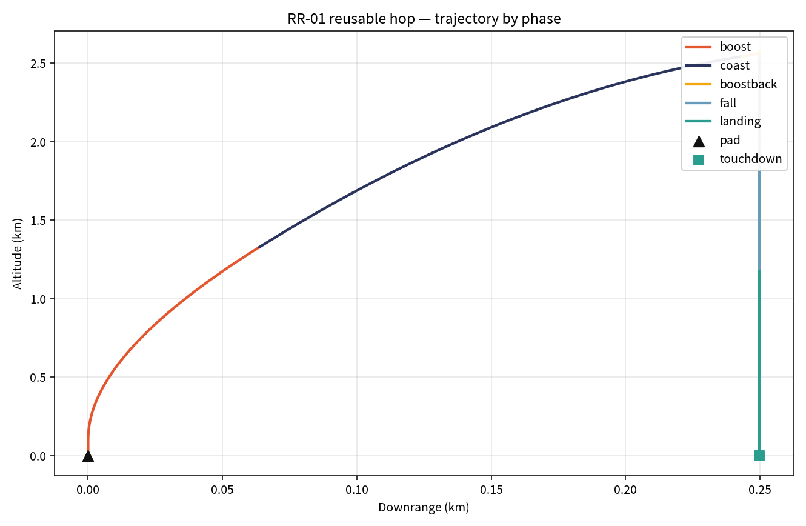
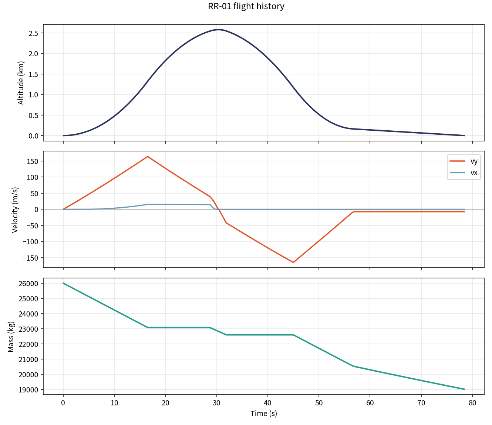
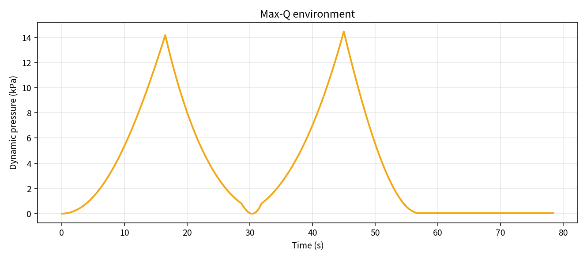

Pad load — locked
20%
methane by mass
4 : 1
LOX : CH₄
3,600 kg
methane loaded
14,400 kg
LOX loaded
Allocation only. Stoichiometric mass split for CH₄ + 2 O₂. Not a mix recipe and not a live-fire procedure.
Vehicle
8 t
dry mass
18 t
propellant
26 t
wet mass
1.92
liftoff T/W
Baseline hop
2.58 km
apogee
78.4 s
flight time
0.25 km
downrange at touchdown
14.5 kPa
max-Q
| Methane | LOX | Total | |
|---|---|---|---|
| Loaded | 3,600 kg | 14,400 kg | 18,000 kg |
| Burned | 1,399 kg | 5,596 kg | 6,995 kg |
| Left on deck | 2,201 kg | 8,804 kg | 11,005 kg |
Flight plots



Profile the sim flies
- Boost — 16.5 s, shallow pitch
- Coast — engine off
- Boostback — kill residual downrange speed
- Fall — unpowered
- Landing burn — suicide-burn altitude + hover-ish T/W near deck
- Touchdown — soft if |vy| < 8 m/s and |vx| < 6 m/s
Reuse argument
Conceptual 10-flight campaign: expendable ~$48M vs reusable ~$7.3M. Reuse only holds if the landing stays soft and turnaround is a checklist, not a rebuild. TSB-01 stays the on-orbit hull. RR-01 is the booster-side analog.